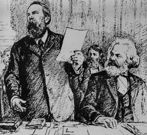

Home
Welcome to the
MARX &
ENGELS
Internet
Library

"The philosophers have only interpreted the world, in various ways; the point is to change it."
— Karl Marx, Theses on Feuerbach, 1845
Featured work
Communist Manifesto
C O N T E N T S
--1843--
Critique of Hegel's Philosophy of Right
--1844--
On the Jewish Question
Economic and Philosophic Manuscripts of 1844
--1845--
Theses on Feuerbach
The Condition of the Working Class in England
The Holy Family
--1845-46--
The German Ideology
--1847--
The Principles of Communism
The Poverty of Philosophy
Wage Labour and Capital
--1848--
Manifesto of the Communist Party
--1850--
The Class Struggles in France, 1848 to 1850
The Peasant War in Germany
--1852--
The Eighteenth Brumaire of Louis Bonaparte
Revolution and Counter-Revolution in Germany
--1859--
A Contribution to the Critique of Political Economy
--1865--
Value, Price and Profit
--1867-1894--
Capital, Volume I
(PDF)
Capital, Volume II
(PDF)
Capital, Volume III
(PDF)
--1871--
The Civil War in France
--1872--
On Authority
The Housing Question
--1875--
Critique of the Gotha Programme
--1877--
Anti-Dühring
--1880--
Socialism: Utopian and Scientific
--1884--
Origin of the Family, Private Property and the State
--1886--
Ludwig Feuerbach and the End of Classical German Philosophy